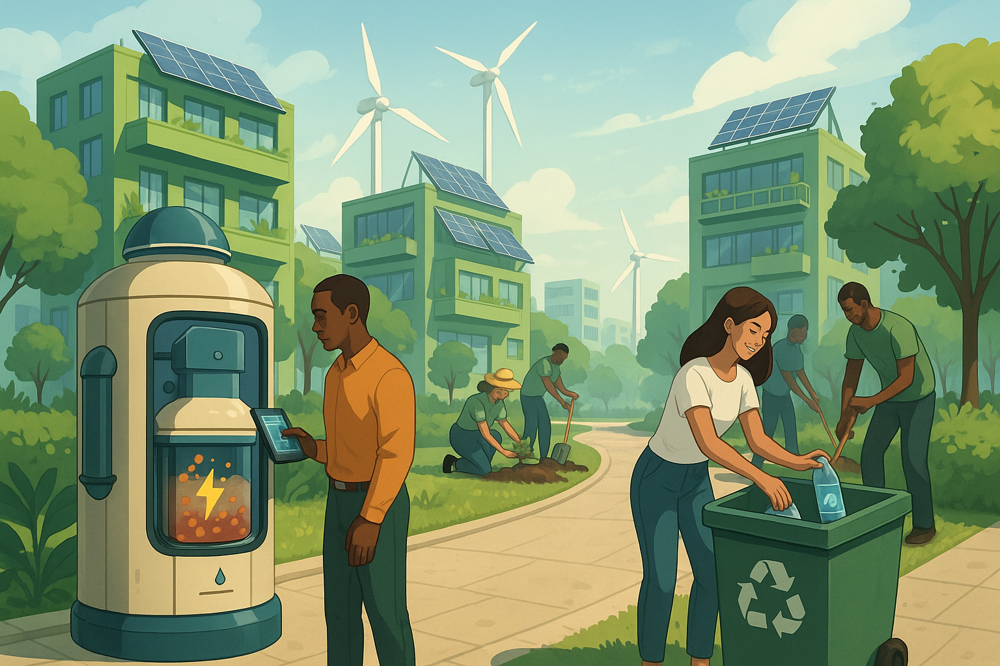

Decentralized Waste-to-Energy Systems for Sustainable Communities

Why it matters: This solution tackles three pressing global issues: poor waste management, lack of reliable energy, and environmental degradation. By converting waste into energy locally, communities can become more self-reliant, sustainable, and resilient.
Key Benefits:
- Converts waste into useful energy (biogas or electricity)
- Promotes a circular economy and reduces landfill burden
- Provides clean, decentralized energy in underserved areas
- Can be monitored and optimized using AI and GIS
- Opens opportunities for carbon credit integration via blockchain
Practical Applications:
- Rural communities or urban slums with no power access
- Small businesses, schools, and clinics
- Eco-villages and smart cities
Supports the SDGs:
This solution aligns with:
- SDG 7: Affordable and Clean Energy
- SDG 11: Sustainable Cities and Communities
- SDG 12: Responsible Consumption and Production
- SDG 13: Climate Action